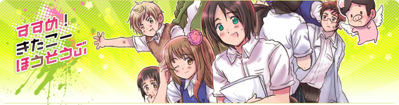
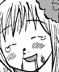

キタユメ。
>
きたこー放送部
>マンガ

第一話「廃部」
いきなり廃部。
第二話「えっマジで！？」
マジで。
第三話「なんで俺の隣がフリーザなんだ」
ビックボスがんばる。
小話「BUIN獲得大作戦」
そこでブル魔。
第四話「きたこうで学んだのは
下ネタとセクハラだ」
おしり大好きオニョ先生

第五話「前科の多さには自信があります」
学校にレンジャー。
第六話「歯医者でがん告知」
ストレンジャーライクミー。
あさか小話「紫の旗行くところ」
松影はまつかげと読みます。
第七話「ナースになったらご指名してね！」
俺男だけどね！
第八話「きたこーであった怖い話」
野郎同士がいちゃいちゃしてるよ。
第九話「緑色のプールはこたえました。」
わが校はプールの授業を受けてないと秋の緑色のプールで補修になるのです。
第十話「貴様などに屈するとは」
メガネ。
第十一話「ふとましい俺」
二の腕がやばい。
第十二話「のとのとナース」
あさかからの殺し屋。
第十三話「檄！きたこー放送部」
副会長が出てきます。
第十四話「お前んち萌えてるぞ」
萌えてるぞ。
第十五話「お嫁さんになってくれ！
二人でお菓子の家に住もう！」
無理。
小話「昭和のきたこー」
古きよき時代のきたこー放送部（？）
第十六話「田中君まぶしいよ」
第十七話「草島のレポートに
貧乳フェチと書いたのは俺だ」
１７．５話「体育祭は地獄だぜ」
「クリスマス小話」
ゆんゆん。（現在編集中）
小話「小話寄せ集め」
小話「地獄のスタンプラリー」
三年生は地獄のスタンプラリーがあるのです。
第１８話
「腐女子賛歌
」
腐ってようが乙女ですよ。
第１９話
「腐女子異種格闘ぎ戦」
I don't need ヒロイン。
おまけ漫画など
「１０万HITありがとうなのですよー」
「ゆんゆんクリスマス」
「でんぱゆんゆん」